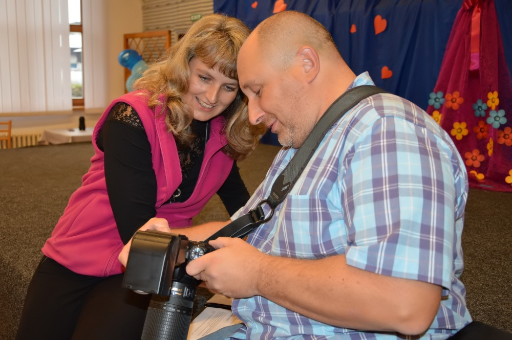

Existují dva různé ceníky - standardní ceník a ceník MODEL RELEASE.
Ceník MODEL RELEASE znamená, že fotograf může zveřejnit fotografie za
účelem prezentace své práce.
| Pořízení fotografií | ||
| 1 hodina fotografování | 400,-Kč/hod. | 2 hod. a více = 300,-Kč/hod. |
| Úprava fotografií | ||
| Reportáž (ořez, barevné, světelné korekce) |
20,-Kč/ks | 5ks a více = 15,-Kč/ks |
|
Reportáž účelová, umělecká, lifestyle (ořez, barevné, světelné korekce, retuš) |
70,-Kč/ks | 5ks a více = 50,-Kč/ks |
|
Budovy (ořez, barevné, světelné korekce, srovnání svislic) |
70,-Kč/ks | 5ks a více = 50,-Kč/ks |
|
Krajiny, budovy v krajině (ořez, světelné korekce, srovnání svislic, čekání na denní dobu a počasí) |
200,-Kč/ks | 5ks a více = 150,-Kč/ks |
|
Potrét (ořez, barevné, světelné korekce, portrétní retuš) |
200,-Kč/ks | 5ks a více = 150,-Kč/ks |
|
Glamour, art (ořez, barevné, světelné korekce, glamour retuš) |
400,-Kč/ks | 5ks a více = 300,-Kč/ks |
|
Grafická úprava fotografie - koláže, montáže (dle časové náročnosti) |
400,-Kč/hod. | 5ks a více = 300,-Kč/hod. |
| Mimo ateliér | ||
| Doprava mimo Nový Jičín | 200,-Kč/10km | nad 50km = 100,-Kč/10km |
| Přeprava studia | 1000,-Kč | / |
| Výstup | ||
| Flash disk | 150,-Kč | zdarma při ceně práce nad 1000,-Kč |
| Vyvolání fotografií 9 x 13, 10 x 15 | 10,-Kč | / |
| Vyvolání fotografií 13 x 18 | 40,-Kč | / |
| Vyvolání fotografií 24 x 30 | 100,-Kč | / |
| Pořízení fotografií | ||
| 1 hodina fotografování | 300,-Kč/hod. | 2 hod. a více = 200,-Kč/hod. |
| Úprava fotografií | ||
| Reportáž (ořez, barevné, světelné korekce) |
15,-Kč/ks | 5ks a více = 10,-Kč/ks |
|
Reportáž účelová, umělecká, lifestyle (ořez, barevné, světelné korekce, retuš) |
50,-Kč/ks | 5ks a více = 30,-Kč/ks |
|
Budovy (ořez, barevné, světelné korekce, srovnání svislic) |
50,-Kč/ks | 5ks a více = 30,-Kč/ks |
|
Krajiny, budovy v krajině (ořez, světelné korekce, srovnání svislic, čekání na denní dobu a počasí) |
150,-Kč/ks | 5ks a více = 100,-Kč/ks |
|
Potrét (ořez, barevné, světelné korekce, portrétní retuš) |
150,-Kč/ks | 5ks a více = 100,-Kč/ks |
|
Glamour, art (ořez, barevné, světelné korekce, glamour retuš) |
300,-Kč/ks | 5ks a více = 200,-Kč/ks |
|
Grafická úprava fotografie - koláže, montáže (dle časové náročnosti) |
300,-Kč/hod. | 5ks a více = 200,-Kč/hod. |
| Mimo ateliér | ||
| Doprava mimo Nový Jičín | 70,-Kč/10km | nad 50km = 50,-Kč/10km |
| Přeprava studia | 750,-Kč | / |
| Výstup | ||
| Flash disk | 100,-Kč | zdarma při ceně práce nad 1000,-Kč |
| Vyvolání fotografií 9 x 13, 10 x 15 | 10,-Kč | / |
| Vyvolání fotografií 13 x 18 | 40,-Kč | / |
| Vyvolání fotografií 24 x 30 | 100,-Kč | / |
| Úsporný balíček | ||
|
1 hod. focení, 20 upravených reportážních fotografií, 5 portrétních či inscenovaných fotografií |
2000,-Kč (standard) | 1450,-Kč (model release) |
| Vyvolání fotografií: 20ks 10 x 15 + 5ks 15 x 21 | 400,-Kč (standard) | 310,-Kč (model release) |
| Cena dohromady | 2400,-Kč (standard) | 1760,-Kč (model release) |
| Balíček standard | ||
|
2 hod. focení, 40 upravených reportážních fotografií, 10 portrétních či inscenovaných fotografií |
4000,-Kč (standard) | 2900,-Kč (model release) |
| Vyvolání fotografií: 40ks 10 x 15 + 10ks 15 x 21 | 800,-Kč (standard) | 620,-Kč (model release) |
| Cena dohromady | 4800,-Kč (standard) | 3520,-Kč (model release) |
| Balíček standard + | ||
|
4 hod. focení, 60 upravených reportážních fotografií, 15 portrétních či inscenovaných fotografií |
6400,-Kč (standard) | 4650,-Kč (model release) |
| Vyvolání fotografií: 60ks 10 x 15 + 15ks 15 x 21 + 1ks 20 x 30 | 1300,-Kč (standard) | 1005,-Kč (model release) |
| Cena dohromady | 7700,-Kč (standard) | 5655,-Kč (model release) |
| Balíček exclusive | ||
|
6 hod. focení, 100 upravených reportážních fotografií, 20 portrétních či inscenovaných fotografií |
9400,-Kč (standard) | 6800,-Kč (model release) |
| Vyvolání fotografií: 100ks 10 x 15 + 20ks 15 x 21 + 3ks 20 x 30 | 2100,-Kč (standard) | 1625,-Kč (model release) |
| Cena dohromady | 11500,-Kč (standard) | 8425,-Kč (model release) |
Nafotíme neomezený počet fotografií a tyto všechny dostanete neupravené ve formátu JPG. Platí se jen hodiny focení.
Je možno použít naše studio pro portrétní fotografie novomanželů. Příplatek dle ceníku viz výše.
Z těch si poté vyberete fotografie určené na úpravu. Platí se počet upravených fotografií.
Z každé fotografie uděláme několik verzí (barva, barevné tóny, čb, různé výřezy). To je v ceně jedné fotografie.
Tyto upravené fotografie i s archivem původních neupravených fotografií dostanete na flash disku.
Z těchto fotografií si pak můžete vybrat fotografie na tisk či pro fotoknihu. Cena dle ceníku viz výše.
